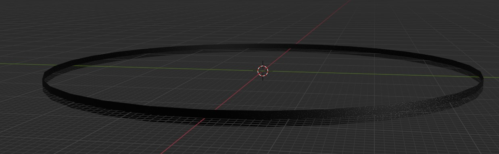
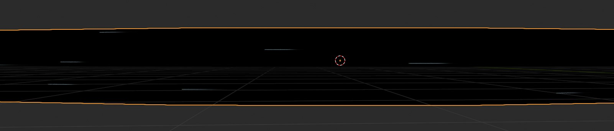

Something big through most of my projects is a fix for discontinuities. These occur whenever a hard cut is present. For me, these hard cuts mostly consist of the edges of an image or the beginning/end of the animation. The goal then is to write functions that produce outputs such that f(0)=f(a+1) where a is the largest values we are using. The eye can also pick up changes in speed, so also making the function smooth across the cut (f'(0) = f'(a+1)) is also important.
Continuity in rain shouldn't be all that difficult. In theory a singular really tall texture that connects bottom to top would work. This is exactly the same as a cylinder.
all that needs to be done is rotate the cylinder around and have it pass the camera, solving one of the continuity problems.
Defining where each raindrop is easy, just pick a random point. Building the drop from that is much more difficult. To do this a transformation is made to make an origin around the raindrop. But we were using a cylinder, which is in 3-dimensions and changes depending on where we are on the cylinder (positive x may not always be to the left of the origin). To fix this a swap to cylindrical coordinates is required. This helps, but still causes problems around φ=0 or 2π as it is much more difficult for the transformation to deal with this area (its called a branch cut and dealing with it is a very large part of complex analysis). To remedy this another transformation is made to pull the values away from the branch cut so no cross are made. This works and means that a simple function can be made to draw the the rain.
The shape of the rain is ment to mimic the expected shape of rain from a camera. Without the steps from the paragraph above many problems arise with direction of the rain (the shape would be inverted).
A alot of tricks need to be made as all of this needs to run in a shader to be sent to the gpu in order to run as fast as possible. This is why many steps may be confusing/inefficient in order for the gpu to properly interpret whats going on and be able to produce an output in real-time.